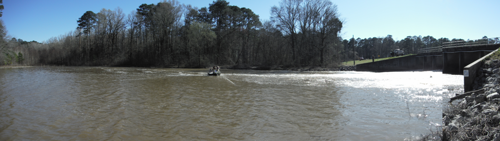

Models have facilitated both research and management of aquatic systems. Various models have been developed that can be used by stakeholders to evaluate management or used in a formal structured decision making or adaptive resource management framework. Models developed can be read and simulated using ISEE Player which is freely available at: http://www.iseesystems.com/softwares/player/iseeplayer.aspx.
This model was developed to support decisions of carp population control for Malheur National Wildlife Refuge (NWR) in Burns, Oregon. Malheur NWR is a complex system of aquatic resources that has seen declines in waterfowl production due to water quality declines. Common carp have been identified to limit water quality in this system; however management difficult of these interconnected populations is difficult. This model develops 6 main interconnected common carp populations that are subject to harvest. Robustness of management strategies (i.e., carp removal) to varying degrees of population connectedness can be evaluated.
Download here (Zip file) This model requires ISEE Player
CarpBioDyn is a tool to evaluate common carp biomass suppression by commercial harvest. This is production model for a research model that fitted a semi-discrete biomass dynamics model to a time series of common carp biomass estimates and indices (i.e., CPUE) via maximum likelihood in R. The parameterized model was then constructed in STELLA with a user interface so that managers could evaluate management strategies and the effect of unintentional underharvest on biomass dynamics. More details regarding the development of this model can be found here.
Download here (Zip file) This model requires ISEE Player
CLESM is a tool to evaluate the effects varying non-native species dynamics and restoration on water quality, recreational fishery yield, and primary production in an ecosystem context for a shallow eutrophic lake in Iowa. Specifically, the model was developed to assess the impacts of common carp and a recent invasion of zebra mussels on an economically and recreationally important lake, Clear Lake located in north central Iowa.
Download here (Zip file) This model requires ISEE Player